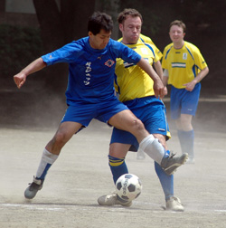
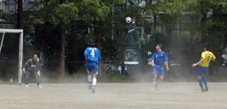
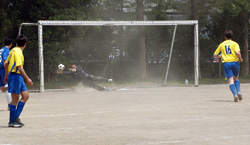

|
Mitsuike Koen, Saturday, May 24th
A good day for footy on a warm Saturday afternoon in May the Geckoes and Jets showed up at a new pitch for both teams I believe. Very similar to Oi-dirt with perhaps a few more bumps and therefore bobbles. The ref made sure every was ready, shirts tucked in? Ok, very good, let’s go.
The Jets were a bit out of sorts and fielding some new players, which was the excuse they gave me after the game anyway, but fair enough I didn’t recognize many of them. Actually the first 10-15 minutes was quite even but unfortunately for the Jets a long back pass and with a sudden loss of concentration from the keeper the ball slipped under his foot and into the net. The Geckoes really didn’t look back from there and a few minutes later after a nice ball through, Kai, who has been outstanding this season and coming off a hat-trick in the previous match, chipped a perfect shot over the keeper and though it looked as it might be going over, nestled in the back of net. That’s how the half ended, 2-0.
The Jet’s were up for getting back into the match heads went way down after only a few minutes into the 2nd half as Kaz started his scoring spree. Once again the keeper was left exposed and Kaz produced a clinical finish. Shortly after that, Kaz was taken down in the box, penalty! He grabbed the ball and was ready to take the kick until….your humble reporter feeling he needed a shot, was described later as ‘begging for it’ which I won’t deny, convinced Kaz to have a look and showed him how’s it done….close your eyes and shoot and hope it goes in, it did, lucky. But at 4-0 the game was surely over.

However the scoring was not, the Jets lost possession in their own half and Kaz received the ball on the top of the box and hammered home the fifth. Can’t remember the sixth, but it must have been Kaz again since he scored four. And the last I do remember, Kaz got the ball and scored again. Well done.
A final note that this was the best result in Geckoes league play history. Two more games left in the season and will be hard to repeat the performance, but with the Celts occupying 4th which is where we’d like to finish and Sala still creeping up after an impressive result v the Hibs, we’ll have to try to produce again..
Report by Peter Zollar
|